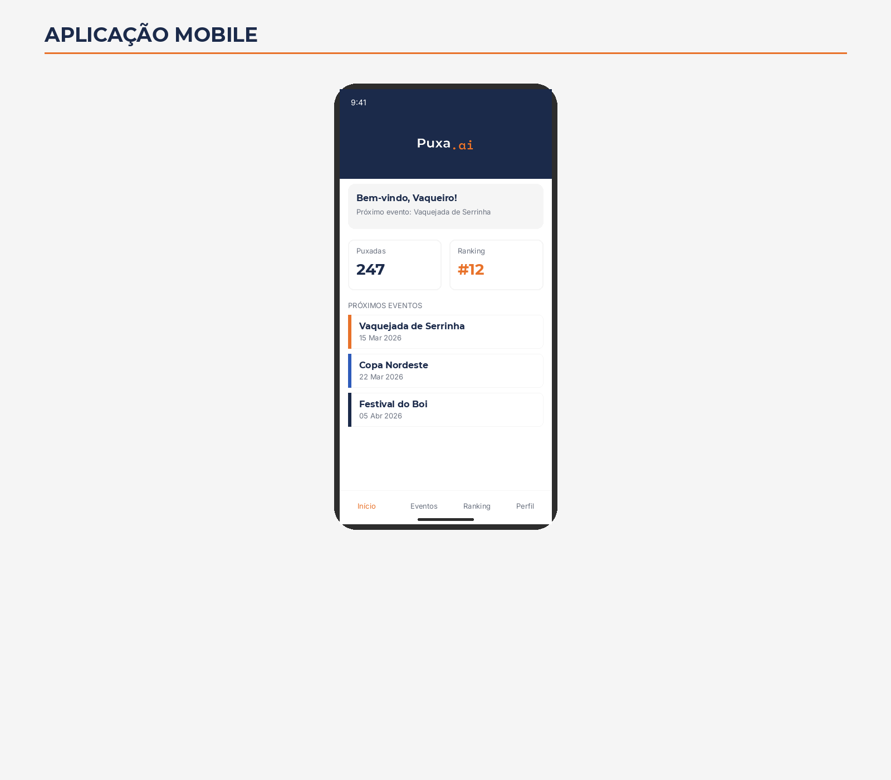

Uma visão completa de como a Puxa.ai está transformando a análise esportiva na vaquejada com tecnologia de ponta, dados precisos e inovação constante.
Dados que transformam a forma como a vaquejada é analisada, treinada e vivida.
A Puxa.ai captura dados de cada prova em tempo real: tempo total da corrida, velocidade de entrada na pista, tempo de reação na largada, distância percorrida até a puxada, ângulo de aproximação e taxa de sucesso por faixa. Esses dados são agregados para criar benchmarks do esporte, permitindo comparações entre eventos, categorias e temporadas.
Cada vaqueiro possui um perfil individual com métricas detalhadas: número de provas disputadas, taxa de sucesso geral e por categoria, tempo médio de puxada, evolução ao longo da temporada, desempenho em diferentes parques e condições. O perfil permite identificar pontos fortes, oportunidades de melhoria e tendências de desempenho.
O cavalo é protagonista na vaquejada e merece análise à altura. A plataforma registra velocidade máxima e média, tempo de aceleração, desempenho por tipo de pista, compatibilidade com diferentes vaqueiros, histórico de lesões e períodos de descanso. Dados que ajudam a otimizar o treinamento e preservar a saúde do animal.
Compare o desempenho de duplas, vaqueiros e cavalos lado a lado. Gráficos interativos mostram a evolução temporal, radar de habilidades, distribuição de resultados e projeções baseadas em tendências. Uma ferramenta poderosa para treinadores, organizadores e entusiastas que querem entender o esporte em profundidade.
Transparência, justiça e profissionalismo em cada decisão.
O sistema VAR (Verificação por Assistência de Vídeo) da Puxa.ai é uma inovação sem precedentes na vaquejada. Inspirado nos sistemas utilizados no futebol profissional, foi adaptado e otimizado para as particularidades do esporte.
Câmeras de alta definição são posicionadas em pontos estratégicos da arena: laterais, frontais, na faixa e em visão aérea. Todas as câmeras são sincronizadas em tempo real, permitindo que o operador do VAR analise qualquer momento da prova sob múltiplos ângulos simultaneamente.
4 a 8 câmeras HD sincronizadas capturam cada segundo da prova de diferentes perspectivas, incluindo visão aérea por drone.
O sistema processa e sincroniza todos os feeds de vídeo instantaneamente, permitindo replay imediato em qualquer ângulo.
O operador pode avançar quadro a quadro, com marcações de distância e posição, para avaliar com precisão milimétrica.
Replay em velocidades de 0.25x, 0.5x e 0.1x com qualidade Full HD, revelando detalhes invisíveis a olho nu.
O resultado da análise é compartilhado com o público via telão e transmissão, garantindo total transparência no processo.
Algoritmos proprietários que analisam centenas de variáveis para calcular probabilidades em tempo real.
O algoritmo analisa o histórico completo de cada dupla: resultados em provas anteriores, desempenho em diferentes parques, taxa de sucesso por categoria, evolução ao longo da temporada e padrões de desempenho sob diferentes condições. Quanto mais dados, mais precisa a previsão.
As Odd's são ajustadas dinamicamente com base em informações em tempo real: condição da pista, sequência de provas, desempenho nas rodadas anteriores do evento, condições climáticas e até o perfil do boi sorteado. Cada variável é ponderada pelo algoritmo para refinar a previsão.
Um dos fatores mais importantes é a sinergia entre vaqueiro e cavalo. O sistema analisa o histórico conjunto da dupla, identificando combinações que performam acima ou abaixo da média individual. Essa análise de compatibilidade é exclusiva da Puxa.ai.
Diferente de sistemas opacos, a Puxa.ai mostra os fatores que influenciam cada Odd. O usuário pode entender por que determinada dupla tem maior ou menor probabilidade, quais variáveis pesaram mais e como a Odd evoluiu ao longo do evento.
| Dupla | Histórico | Forma Atual | Odd Final | Confiança |
|---|---|---|---|---|
| R. Nogueira / L. Campos | 85% sucesso | Excelente | 1.85 |
|
| F. Cavalcanti / M. Silva | 72% sucesso | Regular | 2.30 |
|
| J. Almeida / P. Santos | 65% sucesso | Em alta | 3.50 |
|
Visualize a dinâmica completa da prova com tecnologia de rastreamento e mapeamento em tempo real.
Utilizando tecnologia de rastreamento por visão computacional e sensores de posicionamento, a Puxa.ai mapeia em tempo real a posição de cada elemento na arena: o boi, o cavalo puxador e o esteireiro.
O mapa de calor acumula dados de múltiplas provas para revelar padrões: onde acontecem mais puxadas bem-sucedidas, quais zonas da arena são mais disputadas e como diferentes duplas se posicionam estrategicamente.
Uma base de dados centralizada, confiável e acessível para todo o ecossistema da vaquejada.
Vaqueiros, cavalos, organizadores e eventos cadastrados em uma base de dados unificada. Cada entidade possui um perfil completo com informações verificadas, histórico de participações e métricas de desempenho atualizadas automaticamente.
Sistema de busca avançada com filtros por nome, região, categoria, período, desempenho e dezenas de outros critérios. Encontre qualquer informação sobre qualquer prova, vaqueiro ou cavalo em segundos.
Rankings atualizados em tempo real por categoria, região e temporada. Acompanhe a evolução dos melhores vaqueiros e cavalos, com critérios transparentes e baseados em dados verificados.
API aberta para que organizadores, mídia e parceiros possam integrar os dados da Puxa.ai em suas próprias plataformas. Transmissões ao vivo, sites de eventos e aplicativos de terceiros podem acessar dados em tempo real.
Acompanhe provas ao vivo, consulte métricas, receba notificações de Odd's e acesse o banco de dados completo diretamente do seu smartphone. O aplicativo Puxa.ai foi projetado para oferecer a melhor experiência em qualquer lugar.

Junte-se aos primeiros a experimentar a plataforma que vai transformar a análise esportiva na vaquejada para sempre.